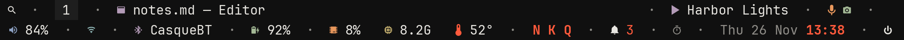
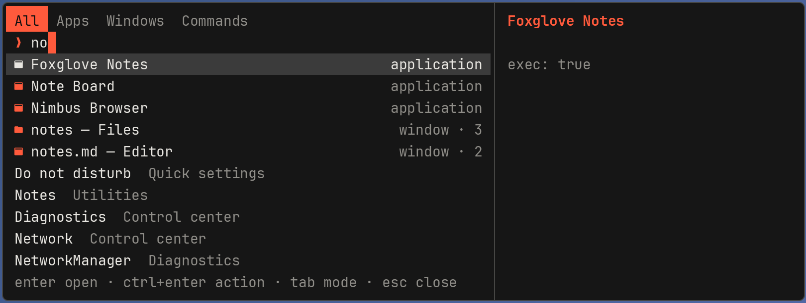
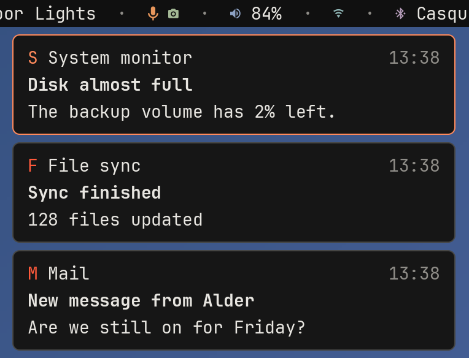
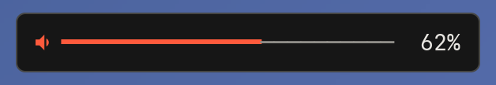
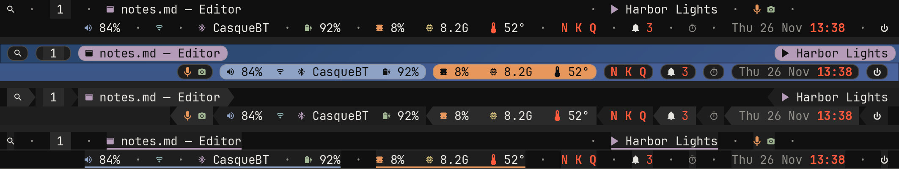

The bar
Workspaces, window title, media, sound, network, Bluetooth, battery, resources, tray, clock, one bar per screen; with the tray, calendar, media, resources, timer, privacy indicators, failed units and the power menu.
docs →A lightweight, terminal-spirited Wayland desktop shell, written in Rust: a bar, a launcher, notifications, an on-screen display, quick settings and a terminal control center.
Aimed at modest hardware with modern features, and light first: it keeps nothing resident that it does not need and wakes up for nothing at rest. Mouse and keyboard everywhere.
A personal project, used daily by its author, who keeps adding to it; expect rough edges outside that setup.

Three programs from one Cargo workspace: alpheus-demon (the resident daemon), alpheus-launch (a tiny client that talks to it from a key bind or a script) and alpheus (the control center).
Workspaces, window title, media, sound, network, Bluetooth, battery, resources, tray, clock, one bar per screen; with the tray, calendar, media, resources, timer, privacy indicators, failed units and the power menu.
docs →
Apps, windows, commands, a calculator, emoji, web search, a window switcher, your own command sources, and a --dmenu mode for scripts.

alpheus's own server, bubbles, a bell, a history panel.
docs →
A pill for volume, microphone and brightness.
docs →
Volume, brightness, Wi-Fi, Bluetooth, VPN, do-not-disturb, power profile, session buttons.
docs →
A terminal program, eight tabs from Sound to Diag.
docs →
Fifteen presets or your wallpaper, light and dark, six bar shapes.
docs →What a desktop shell keeps resident, measured as PSS on release builds.
| Shell | Toolkit | Resident | What it covers |
|---|---|---|---|
| alpheus | Rust, no toolkit | ≈ 15 MB | the bar daemon and sound source, swaybg (optional); to be re-measured |
| waybar + mako + swayosd + swaybg | GTK / C | ≈ 55 MB | bar, notifications, OSD, wallpaper |
| HyprPanel | GJS | ≈ 151 MB | bar, notifications, OSD (Hyprland only) |
| Wayle | Rust, GTK4 | ≈ 168 MB | bar, panels |
| ashell + swaync | Rust, iced | ≈ 194 MB | bar, notifications |
| Noctalia 4.7 | Quickshell (QML) | ≈ 517 MB | full shell |
| DankMaterialShell | Quickshell (QML) | ≈ 537 MB | full shell |
| Caelestia | Quickshell (QML) | ≈ 730 MB | full shell |
How each figure was taken, and alpheus component by component: measurements.
Idle, sleep and screen power-off (hypridle, swayidle…), the lock screen, file choosers and the wallpaper (swaybg works). alpheus never touches sleep or screen power-off.
It is not packaged for any distribution yet: it builds with Nix or Cargo. Some defaults still call commands alpheus does not ship, such as wm-set to switch a workspace; those of the bar and the launcher are configurable, and a missing command fails visibly and breaks nothing else.
The x86_64 Linux tarball of a release, checked against its SHA256SUMS:
v=0.1.0
base=https://github.com/mornepousse/alpheus/releases/download/v$v
curl -fLO "$base/alpheus-$v-x86_64-linux.tar.gz"
curl -fLO "$base/SHA256SUMS"
sha256sum -c SHA256SUMS
tar -xzf "alpheus-$v-x86_64-linux.tar.gz"
install -Dm755 -t ~/.local/bin "alpheus-$v-x86_64-linux"/alpheus "alpheus-$v-x86_64-linux"/alpheus-demon "alpheus-$v-x86_64-linux"/alpheus-launchOr with Nix, or from source:
nix run github:mornepousse/alpheus#alpheus-demon # straight from GitHub, no clone
nix build .#alpheus-demon .#alpheus-launch .#alpheus # or: cargo build --releaseThen:
alpheus-demon # from your compositor's startup
alpheus-launch --toggle # bind this to a key
alpheus --tab sound # the control center, on a tabBuild and runtime dependencies, a flake input, and key binds for Hyprland, Sway, niri and Mango: install.md. Everything is optional, under ~/.config/alpheus/.